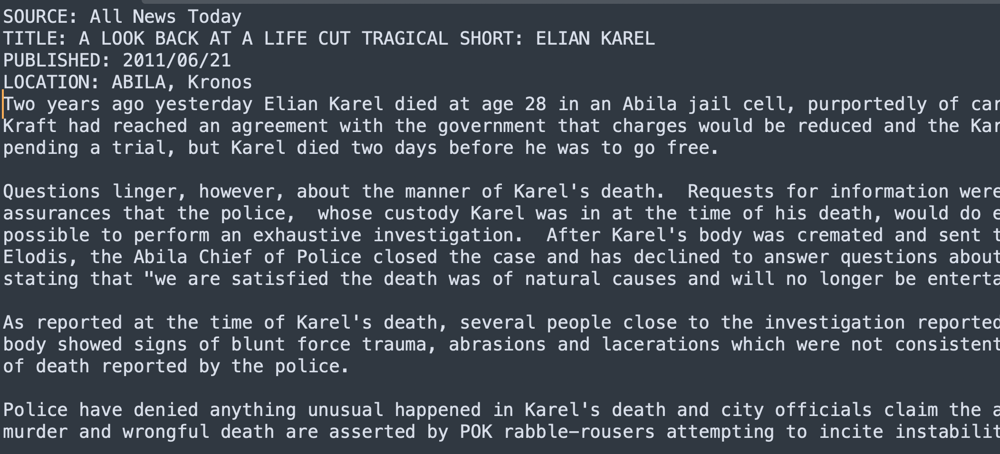
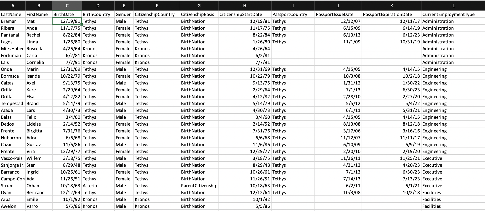
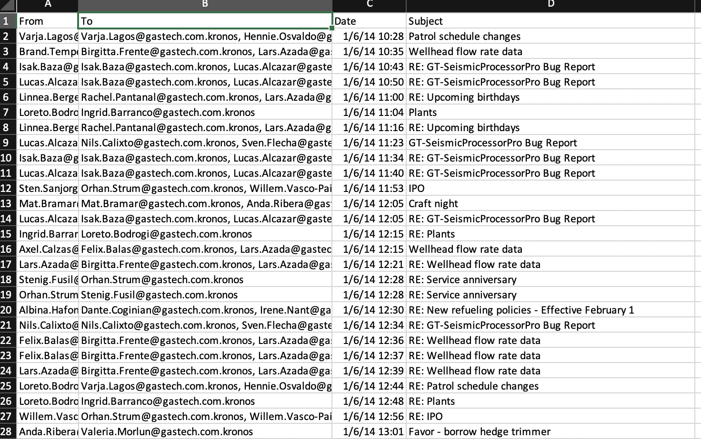
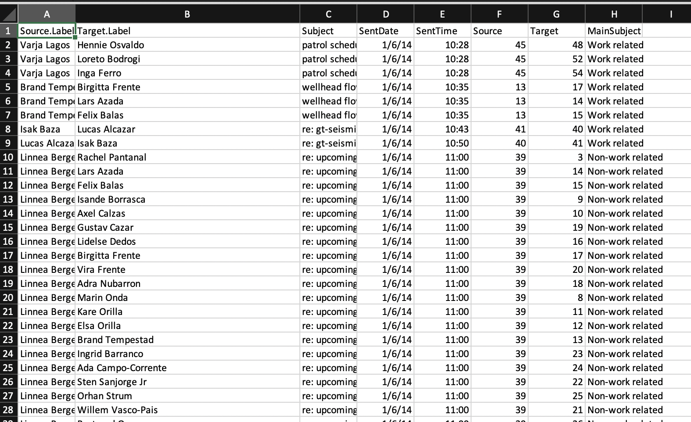

The Mini Challenge 1 has following related data.
Adding screenshot of sample news article  We have created new csv name cleanArticle.csv and added below column into them.We have added all the news article in this cv.
Adding Screenshot of sample Employee
 We have created new csv name cleanEmployee.csv and added below column into them.We have added have added only important column in our new csv file.Adding Screenshot of Email header file
We have created new csv name cleanEmail.csv and added below column into them.We made 3 new column namely Source.label ,Target.label and Main subject. In the Original dataset Sent coloumn consist of all the people receiving the email but we made it separate and added in new row all the people receiving the mail. We made column MainSubject to segregate between Work related or Non Work related mail.
Adding Screenshot of cleanEmail.csv
We have used TF-IDF to find correlation between different news publication. TF-IDF stands for Term Frequency-Inverse Document Frequency. It is a numerical statistic that reflects the importance of a word in a document corpus. Goal of using TF-IDF is to identify words that are important in a particular document, relative to all other documents in the corpus. The term frequency (TF) component of TF-IDF measures how frequently a word appears in a document. It is calculated by dividing the number of times a word appears in a document by the total number of words in the document. The idea behind this is that words that occur more frequently within a document are likely to be more important.
We have used TF-IDF algorithm to cluster the news source into 5 different group.
We have used Latent Dichrelet Allocations Algorithm to find similarity between news sources. Latent Dirichlet Allocation (LDA) is a statistical model and unsupervised machine learning algorithm used to discover hidden topics in large collections of texts. The algorithm is based on the assumption that each document in a collection is a mixture of a small number of topics, and each word in a document is associated with a particular topic. LDA works by representing documents as a bag of words, where the order of the words is not important. It assumes that each document is a mixture of a fixed number of topics, and that each topic is a distribution over words. The algorithm tries to learn the topic distribution for each document and the word distribution for each topic, by iteratively estimating the probability of a word belonging to a particular topic, and the probability of a document containing a particular topic. Using LDA we have clustered news source in 5 group.
We went through the historical documents and drew a tree chart and understood the organization structure of PoK. From this, we wrote JS logic to filter the employee records CSV to only have the people that have either the same full name or last name as the people of the PoK organization. This is the suspect pool we started with. Going through mail subjects given to us for the suspected people we identified, we were able to narrow down to a few suspicious mails based on few potentially suspicious keywords such as virus, arise etc. Equipped with this information, we wrote several JS scripts to filter the data of mail subjects to include the mail threads of the suspicious people, suspicious subjects and extension of people if they are on the suspicious mail threads. We crafted JSON data by utilizing the GASTech organization structure images provided in the data.